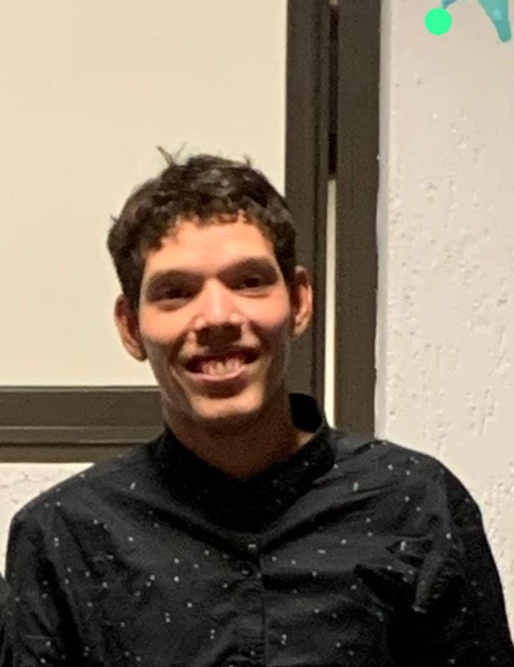

Soy una persona con una capacidad rápida de aprendizaje
y una gran habilidad para desarrollarme en diferentes tecnologías.
Actualmente, estoy enfocado en el desarrollo en el campo de la robótica.

Experiencia laboral
Divefull - video juegos
Estaba para configurar los juegos de arcade y
arreglaba la desconfiguracion del juego arcade
Frutica - FRUTICULTURA
Estaba para recojer las frutas y junta caja y poene en el tractor.
Educacion
Escuela Basica Bautista - Tecnico en Informatica
ANO 2008-2020
Univesidad Autonoma de Encarnacion - Lic Analisis de Informatica
Actualmente cursando comence 2023